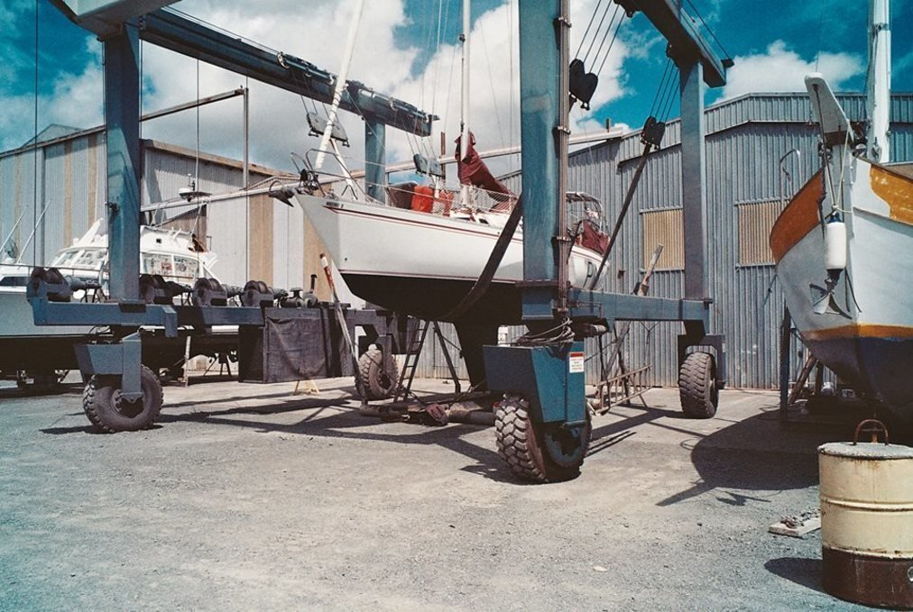

projects and pain
A scary list of fixes
We arrived in New Zealand on October 31st 2017 with a long scary list of things to fix or replace on Pino. We needed new batteries, a new mainsail, a fresh coat of bottom-paint, galley plumbing, new intermediates shrouds, new backstay, new top hatch, new windows, new control cables etc.
"If we can't finish all of these projects, then we can't leave."
That was the deal.
There was too much ocean between us and Japan. Our vessel needed to be made safe to endure it, and to ensure our safe passage.
When we landed in New Zealand, we had grand ideas. 'Grand illusions' I should say, about what we thought we could get done by ourselves. We wanted to learn, but we also wanted to save money. By now, we knew how much it cost to offload the work to others, and it's not something we knew we could do.
Below, is a detailed account of all the repairs we did on Pino during the 9 months we spent in New Zealand. This is a technical post, interspersed with bits of story, present and past. For those who don't know the terms, but that are interested, I'll do my best to explain them all throughout the text.
Note. This post used to be a lot longer, but we subdivided some of the content into other pages under the category boat projects. The moved parts are:
- saloon hatch
- wheel to tiller conversion
- ais installation
- galley plumbing
- standing rigging replacement
- mainsail
- window replacement
All of the above projects were done while we were in New Zealand, between December 2017 and May 2018.
Batteries
About a month after we arrived in NZ, our batteries went flat in the night. Completely dead. We heard the inverter beeping, complaining it didn't have enough power to function.
The beeping woke us up.
We were expecting this. The batteries were not performing so well these days, or even in the last year. There were times when we had to start our portable generator to get the engine going, especially early in the mornings when the sun was too low for solar to be of any help.
After our batteries died in Whangarei, we went to Snow brothers, a car battery store in town, to ask if they had four 6 V batteries in stock — they did.
We opted for the same battery setup as before: 4 lead-acid batteries, two as a house bank and the other as a starter bank.
We bought the batteries, and Snow Brothers offered to deliver them at the marina. They also offered to pick up our old ones to dispose of — great! These things are a pain to carry. Back on Pino, we unhooked all the cables, and lifted the batteries from their restraining boxes. The batteries were bloated, the sides had a curve to them. Yep. These batteries were done, sulphated, and beyond help.
We put one in an old milk crate we had, and lowered it into the dinghy, we did the same for the other set, carrying two at a time because iggy a a soft floor and cannot carry too much weight at once.
Snow Brothers carried our bloated batteries away, and we returned the new ones to the boat, again, in teams of two. We hooked them up, and Pino was sentient again.
Batteries 810$
Solar panels
I noticed one morning an ad on Whangarei marina's bulletin board, concerning a set of two 90W panels for sale. At 150$, we knew we wouldn't get a better deal than this so we contacted the owners.
The owners were upgrading to bigger panels, because boats nowadays require more juice to keep up with power-hungry electronics. How else can you power two fridges, a microwave and an ice crusher? The unfortunate solution is always more.
We removed the 80W panel we had on the forward deck of the boat, it was too exposed to spray, a bad idea overall. We didn't install this panel again, because we discovered creeping corrosion in the wiring. It is possible that this panel wasn't marine-grade. The wires were sealed up, but still, water found its way in. We moved the 100W flexible panel from the bimini top to the dodger, and the two 90's aft. Now, instead of 160W, we had 280W.
Takeaway: Don't install panels too low on your boat, or somewhere waves can wash over them. Also, if you're going to install panels over the cockpit, have a proper arch made (if you don't already have one). As of now, we only have the 100W on the dodger, and with a 90W set up on the aft-most seat under the tiller. The other 90W is inside when we're underway, and we put it out on deck when we're at anchor. The panels we bought are too big and too heavy for our boat, it was a good deal and it helped power Pino for 1 year, but for offshore passages it's just not ideal. Having an arch built is possible, but Pino is a light boat, adding more windage and weight will reduce performance, so, as of now, we're undecided.
Solar panels 150$
See our detailed, separate post on replacing windows(it's a long one).
Haul out
We feared this moment. Of seeing what the hull was like after spending a few months in the Town Basin. Our bottom paint, we knew, was old, and staying in these hot brackish waters likely made it worse. We'd heard New Zealand waters were... healthy, quick on the growth front.
The day that we scheduled our haul out, was also the day when tropical storm Gita passed near New Zealand. Whangarei was safe, with the harbour tucked deep in a river, but we got a lot of the wind and rain. We motored off the pile mooring with ease, our prop wasn't fouled - good. We had nightmares about us not being able to move, the prop heavy with ocean-stuffs, with us losing control and drifting onto other boats, or worse, onto the canopy bridge with the concrete grinding into our mast. Prior to leaving, people told us stories of boats not being able to move because of all the shit caked under their boats. Their stories only fed this irrational fear of ours.
Pino skidded on the water well enough, and we made it to Dockland5. We did have some difficulty steering the boat onto the slings, given the weather, with the wind screaming into our rigging.
Upon seeing Pino out of the water, we gasped. Pino's belly was full of brown clammy bits, forming a thick shell, a disgusting crust of sea things. Any moment now, a human-like shape, a clam for a head, would detach itself from the hull and go on a walkabout while chanting: "Part of the crew! Part of the ship!"
We used an ablative paint, which means that the paint comes off over time. Usually, 3 coats of paint is enough, especially for an offshore yacht where boatyards are far apart (1 coat may be fine for ppl who haul out a lot).
After a few layers of primer, once it had dried off, came time to apply the anti-foul paint. We bought one big can of black Carboline antifoul. One can was enough to do 3 coats.
Drying time can be long between coats, we took this time to do other jobs on the boat, like, replacing the plumbing for the galley sink.
When that project was over, came time for another bottom coat. We interspersed waiting times with other projects, which made our days quite long. We always went to bed exhausted. Our boat was still windowless then, and messy from other ongoing fixes, it was tough to really do anything other than boat stuff. Our laptops were put away, orphaned, and confused.
Pino looked amazing with a fresh bottom and with a clean waterline, we cleaned up some oxidation stains with some Grunt- that stuff works wonders (but don't get it on your skin). Pro tip: remove the oxidation BEFORE applying bottom paint. Grunt will leave streaks in your pain if you try and hose it off, it is better to do right after you've sanded the bottom.
Prop problems
We also cleaned the prop thoroughly, it had lost some of its shine, not just this, we discovered then that we had to grease the thing. It hadn't been greased in some time. Being new to boats, there are some things that people won't think to tell you, and that we, won't ever think to ask. Although while cleaning it, we did notice a place with a bolt, with the word 'grease'. Um. Odd, we thought. Grease. Grease what?
"The prop obviously. How did we miss this?' Devine said. "Because the prop has never been this clean?" Then together we swore aloud, "Eh meeeerde."
Now that we knew we had to grease it, it was time to find out how. We were going to consult the internet hive-mind, but before we could our neighbor came round to help us out. He lent us the gun, and the little nib, required to pump grease into the prop without taking it apart. Thank you neighbor!

Then, came time to coat the prop and shaft with Propspeed, a paint that inhibits growth, in hopes that it wont foul as quickly in the future — something quite necessary in New Zealand waters (it worked well enough, we found).
Last day in the yard
Near the end of our stay in the yard, the boatyard master was kind enough to let Pino sit in the slings for a day, so we could paint the underside of the keel at no extra charge! We'd be put back into the water sometime the next day.
Unfortunately, then, they dropped us off with our nose pointing inward. We have a hard time driving out backwards, especially in a place like this, surrounded with shallows, with current and lots and lots of wind at our beam. We ended up doing a full 360 degrees, coming all too near to the shallows, under the watching eyes of the people at the yard and others on their boats on hardstand. You can be sure that there will always be an audience there watching when you fuck up.
No sailor is beyond making mistakes though, that same couple that watched our clumsy maneuver at the yard also had docking problems coming in. Devine helped them out.
Takeaway: When doing antifoul, get a good mask. The mask we were wearing keeps some of the dust, but none of the harmful fumes at bay. Also protect your skin when removing antifoul. We bought a tyvek suit.
Haul out cost: 430$ for 8 days on the hard
1 can Anti-fouling: 250$
Prop-speed: 200$.
See our detailed posts on replacing our saloon hatch, and on our wheel to tiller conversion.
Headsail furler fix
We were anchored in Port Maurelle, in Tonga, and needed to get back to Neiafu for supplies. On our way there, we opened our headsail, like usual, but when came time to furl it, we couldn't do it with ease. It was very, very difficult to do. Devine went to the bow to take a look, to see if there wasn't anything jammed in the furler (happens sometimes). A piece was missing.
We have an old harken furler, the piece we lost was one of two pieces keeping the slides for the jib centred in the drum — we lost an upper part of the drum. The backing piece was still there at least, we didn't have too many options, and put a hose clamp, and shoved bits between it and the slides to keep it centred, before covering it all with duct tape. A temporary fix, that brought us safely into New Zealand.
I didn't know if it was going to be possible to find that exact piece we'd lost, we didn't look, and anyways, we didn't want to spend an outrageous amount of money on a harken service kit. What we did do, was draw up a new piece for it on paper, took measurements, and had a piece made by a machinist in town. It was inexpensive, quick, and it fits perfectly.
Take away: Look at every part that is screwed in on your boat, as often as you can, so you don't lose them like we did. We check items on the mast often, but didn't think of looking at the furler. Service kits are expensive, try and DIY it if you can, but don't cheap out on materials.
Furler piece 40$.
See our detailed post we wrote on replacing our standing rigging, on getting a new mainsail, and on ais installation.
Wow. This doesn't include materials, like epoxy, paintbrushes, sealants, nails, screws, etc that we had to get to complete these projects.
That about sums up what we got done while in New Zealand, and it's the reason why we didn't travel around much with the boat while there. There are many more things we wanted to change aboard, like changing our head to a dry toilet, changing to a manual windlass, removing a lot of old wiring and things we no longer use like our water heater etc. Removing the head, would mean making additional room for water, that would have been good for this trip but again, we had to prioritize.
We made a lot of mistakes, and foolishly thought we could all do it ourselves. While we prefer to do that most times, it's not always possible. We had too much on our shoulders already. We didn't need the stress. We did do a lot of it on our own, and even the things we had help with, we took part in in some way. Learning to do it all is important, but we are no experts, we'll continue to learn and when we've got more time and room to experiment we'll try and do these things on our own. It's important to ask for help though, there is a lot of value in having a mentor around, not something that is common these days. Our mentors, are all the sailors we meet, and that take time, sitting with us, answering our questions, or coming to help us in the task we need to do.
I'll close this post, by thanking all in NZ who helped us out, for repairs, general advice - whatever. Time and knowledge is precious, we thank you: Herbert & Asma (s/y Maya), Jim & Linda (S/Y Bright moments), Pauline and Antoine (s/y Magellan), Becky Jeffries (uksails) & Daniel (c-spar).